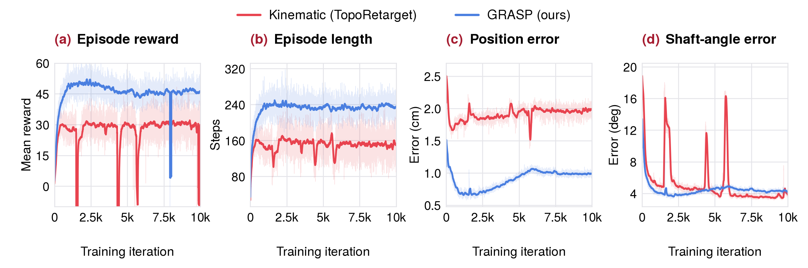
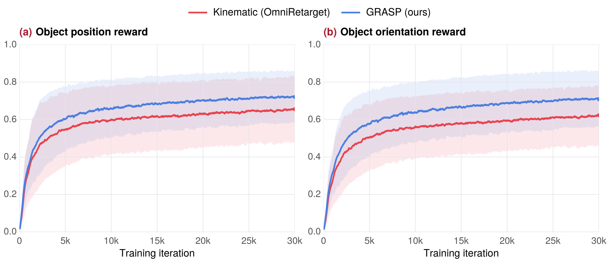

GRASP
Gradient-Guided Sampling for
Contact-Rich Physics-Based Motion Retargeting
Real dex
2× speedOverview
Real robots / Dexterous hands
GRASP
for dexterous hands.
Real robots / Humanoid
GRASP
for humanoid motion.
Method
Evaluate
Every simulated candidate leaves
a control–cost pair.
Recover
Fit the local cost structure.
Recover a direction from the archive.
Guide
Use the recovered gradient
to guide stochastic proposals.
Correct & reuse
The surrogate guides proposals. MH corrects for the proposal bias.
True target
+ forward / reverse proposal densities
Either way, retain the evaluation.The pair (z′, J(z′)) enters the archive for the next fit.
ArchiveWhy the correction matters
The fitted model guides the proposal, but the acceptance test uses the original tempered target and both proposal densities. With the fitted model and proposal settings held fixed within a move block, MH preserves that target.
πλ(z) ∝ p0(z) exp(−λβJ(z)), where J is evaluated by the simulator.
The same evaluations supply candidate motions and local gradient guidance.
GRASP fits local quadratic models to archived control–cost pairs, including rejected proposals. Their gradients guide new samples without differentiating through the simulator. Acceptance uses true simulator costs and a Metropolis–Hastings correction; new evaluations inform the next fit.
Simulation / Dexterous hands
GRASP
for dexterous simulation.
Simulation / Humanoid
GRASP
for humanoid simulation.
Results / Experiments
Quantitative results.
Bimanual object tracking
OakInk2 · Two Sharpa hands · 1,352 GRASP tasks
| Method | Success (%) ↑ | Object position (m) ↓ | Object rotation (rad) ↓ |
|---|---|---|---|
| Dex-retargeting | 28.6 | 0.08 | 0.62 |
| SPIDER mjwp | 71.4 | 0.04 | 0.57 |
| SPIDER mjwp_act | 77.1 | 0.04 | 0.42 |
| Do-as-I-Do (Sharpa) | 81.0 | 0.03 | 0.15 |
| ↳ w/o transition reward | 79.0 | 0.03 | 0.14 |
| ↳ annealed sampling only | 72.0 | 0.08 | 0.32 |
| GRASP | 94.1 | 0.03 | 0.12 |
GRASP evaluates the complete 1,352-task OakInk2 collection. Evaluation sets differ. Bold indicates the best reported value, including ties.
Evaluation details
A GRASP task succeeds when mean object position error is below 10 cm and mean rotation error is below 0.5 rad. Execution failures count as failures. Error means use jointly finite position–rotation error pairs. Baseline success rates follow their original reporting.
Whole-body motion tracking
Unitree G1 · Open-loop robot and object tracking
| Dataset | Method | Robot | Object | |||
|---|---|---|---|---|---|---|
| Joint ej ↓ | Translation et ↓ | Orientation er ↓ | Translation et ↓ | Orientation er ↓ | ||
| LAFAN1 | GMR | 1.08 | 2.01 | 2.40 | — | — |
| SPIDER | 0.58 | 0.11 | 0.07 | — | — | |
| GRASP | 0.30 | 0.02 | 0.06 | — | — | |
| AMASS | GMR | 6.2 | 4.1 | 18.7 | — | — |
| SPIDER | 0.75 | 0.23 | 0.08 | — | — | |
| GRASP | 0.59 | 0.05 | 0.12 | — | — | |
| OMOMO | GMR | 0.57 | 1.43 | 2.28 | 1.18 | 1.68 |
| SPIDER | 0.83 | 0.20 | 0.17 | 0.18 | 0.06 | |
| GRASP | 0.21 | 0.06 | 0.06 | 0.03 | 0.13 | |
GRASP uses SPIDER’s Unitree G1 scenes, tracking objective, and error definitions. Object errors apply to the box in OMOMO only. Bold indicates the lowest reported error within each dataset.
Evaluation details
Joint errors are joint-angle difference norms; translation and orientation errors are pelvis-position and quaternion difference norms, averaged over 60 Hz frames. Object errors use the corresponding object poses.
Policy learning
Dexterous hand

PPO tracking on nine single-axis pen-spinning clips. Kinematic (TopoRetarget) denotes the original kinematic references; GRASP (ours) denotes GRASP-refined references. Curves show 100-iteration moving averages aggregated over the clips.
View full figure ↗Humanoid

Humanoid PPO tracking with three reference motions from OmniRetarget. Red denotes original kinematic references; blue denotes GRASP-refined references. Higher rewards indicate better tracking.
View full figure ↗Abstract
We study physics-based retargeting of human demonstrations for robot learning: finding robot controls that reproduce reference motions under contact dynamics. We propose GRASP (Gradient Recovery from Archived Samples for Proposals), which combines sampling-based exploration with gradient-guided refinement without requiring a differentiable simulator.
GRASP-TO extends tempered sequential Monte Carlo by fitting local quadratic cost models to archived rollouts and using their gradients to guide Markov chain Monte Carlo rejuvenation. Metropolis–Hastings correction preserves the target distribution for each fixed proposal kernel, and a population analysis connects the recovered gradients to Gaussian smoothing. GRASP-MPC scales this optimizer to long demonstrations through warm-started receding-horizon planning.
Experiments on dexterous hands and humanoids show accurate retargeting with a shared tracking objective and no task-specific contact rewards, including 94.1% success on 1352 bimanual OakInk2 demonstrations. The refined references improve PPO tracking in pen spinning and humanoid–object interaction. We also demonstrate dexterous manipulation and whole-body humanoid motion on real hardware.
Cite
Citation.
@misc{liu2026grasp,
title = {{GRASP}: Gradient-Guided Sampling for Contact-Rich Physics-Based Motion Retargeting},
author = {Liu, Yang and Wang, Tong and Bao, Yiming and Yang, Heng},
year = {2026},
url = {https://computationalrobotics.seas.harvard.edu/GRASP/}
}